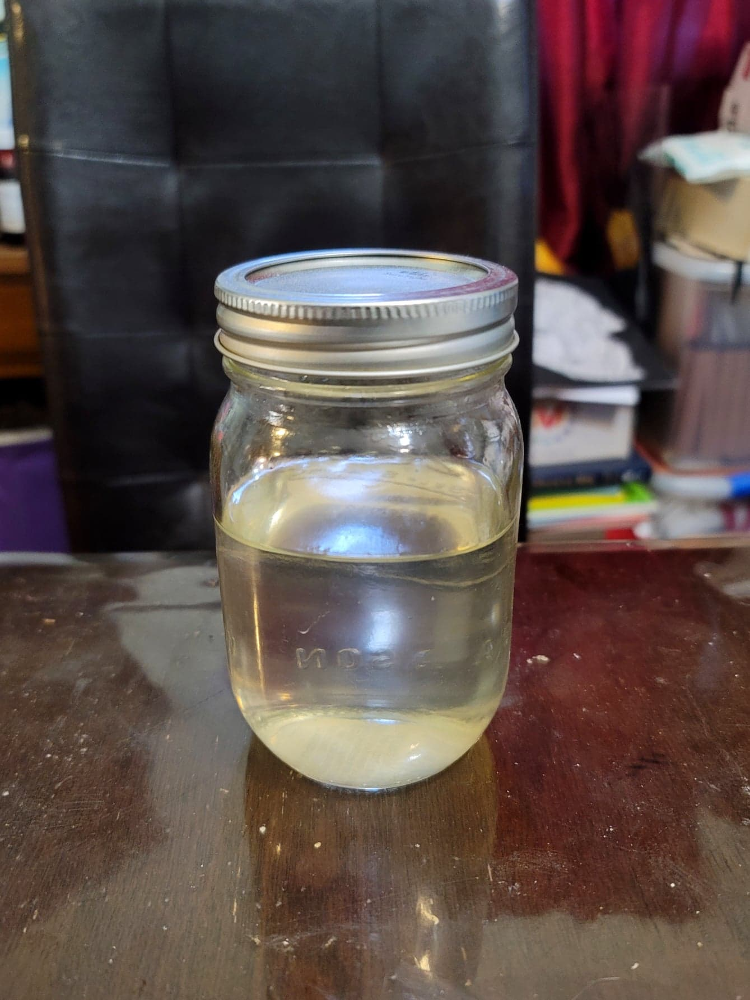

Simple Syrup

Ingredients:
- 1 cup Water
- 1 cup Sugar
- Optional: 1/2 tsp Lemon/Lime juice
- Optional: 1 tsp Flavoring, Vanilla, Rose water, etc.
Instructions:
- Add the sugar, water, and lemon/lime juice to a pot and bring to a boil. Then reduce to low and let simmer for 10 minutes. Remove from the heat and stir in the flavoring.
- Let cool before using or transfer to the fridge to use later.